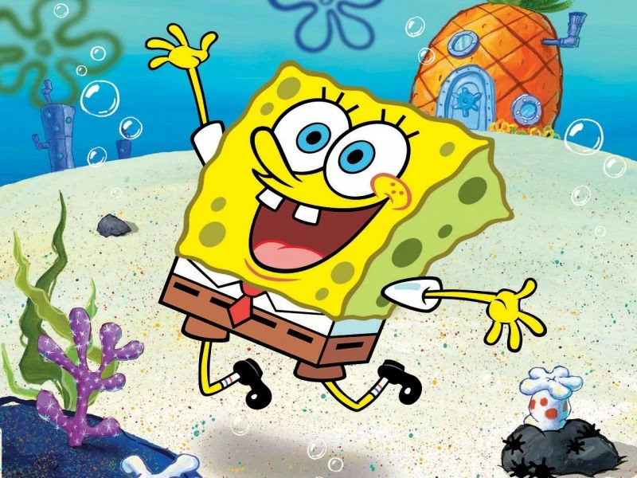

Sobre el minijuego
Este es un minijuego creado por los estudiantes de la Lic. en Diseño Multimedial Pablo Bautista (121435/8) y Lucas Ramiro Gordillo (119050/3) basado en la popular serie animada de televisión "Bob Esponja" creada por Stephen Hillenburg y Nikelodeon. El minijuego toma como inspiración uno de los episodios de la segunda temporada de la serie, lanzada en el año 2000, titulado "Muriendo por pasteles". Utilizando como base este capitulo, la consigna fue crear una aventura gráfica en la que se pudieran tomar decisiones, modificando así el recorrido y el desenlace final de la historia. Primero tuvimos que hacer un diagrama de flujo para el desarrollo de la historia, lo que vendría a ser nuestro guión para nuestra historia interactiva. Luego deberíamos crear la aventura en el programa Processing 4.3 en p5-js, creamos una logica de estados y botones para poder modificar las pantallas y poder avanzar en la historia. Luego se debería crear un minijuego basado en esta aventura gráfica, el cual debería obrar como una instancia de decisión dentro del juego, donde la dirección de la trama dependía en si el jugador ganase o perdiese la tarea planteada en el minijuego.
En este caso, el minijuego representa el subconsiente de Calamardo, quien es el protagonista y a quien el jugador debe controlar. Calamardo deberá eliminar a todos los Bobs que se presentan de manera repentina para poder, finalmente, tomar la decisión que llevara la historia a un desenlace un tanto particular. Mientras que, si el jugador llega a perder el minijuego, la historia tomará un rumbo distinto.
El minijuego comenzaría reemplazando la última decision de la aventura, primero pensamos en el concepto de un minijuego que tenga que ver con nuestra aventura gráfica y así llegamos a la idea anteriormente explicada. Pensamos en un minijuego de disparos donde calamardo use su clarinete y dispare notas musicales para acabar con los enemigos. Utilizamos sprites de juegos antiguos para los personajes y creamos uno para las notas musicales, con temática de pixelart, mientras que para los fondos buscamos recursos de la serie original en internet al igual que la tipografía y la música que suena al comenzar el minijuego.